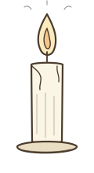
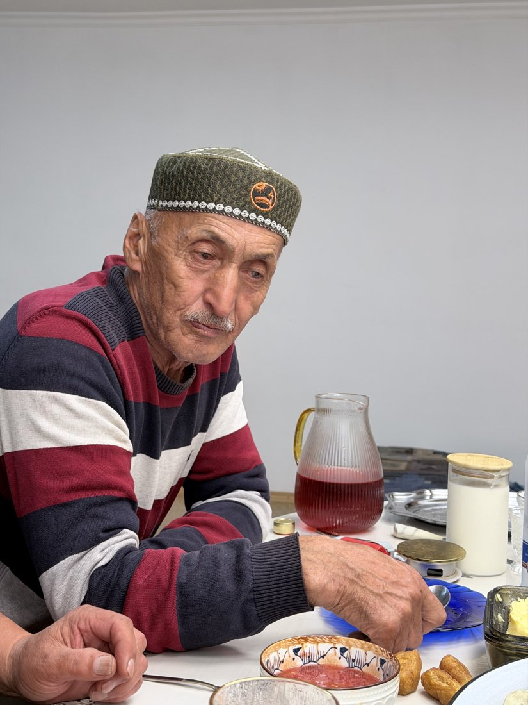
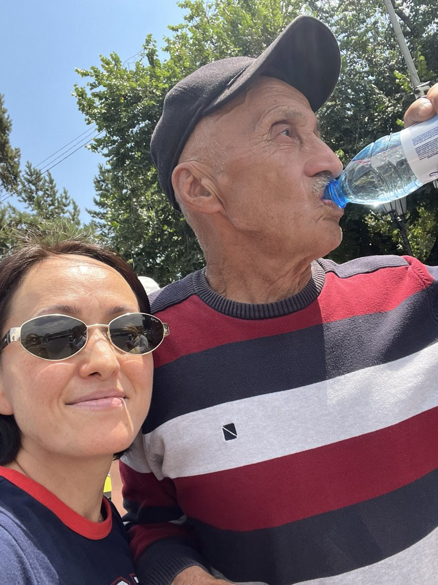

глава из романа «Ветруша»
☀️ Папины утра
Чайник запел —
папа в ответ ещё громче,
утро танцует

папа и моя дочь, степь
Однажды ночью, вдали от дома, Ветруша не могла уснуть. Ветер нашёл её у окна и спросил:
— Кто научил тебя, что любовь может быть радостной?
Ей не пришлось думать.
— Папа, — сказала она. — По утрам.
В родительском доме утра принадлежали ему. Пока дом был ещё синим от раннего света, а чайник начинал тихо гудеть на печке, которая грела весь дом, папа начинал петь свои казахские песни. Сначала негромко, потом всё громче, пока не просыпался весь дом, хотел он того или нет.
он никогда не пел стоя на месте

И он никогда не пел стоя на месте. Это она запомнила больше всего. В него входила песня, и тело не могло ей не ответить. Он танцевал так, как движется пламя свечи: не для тех, кто смотрит, а просто потому, что оно живое.

Среди всех его казахских песен была одна русская, которую он любил больше всего, — «Дым сигарет с ментолом». Когда она звучала, папа прикрывал глаза и покачивался, будто дым из песни поднимался вокруг него, прохладный и серебристый, и вился к потолку. Маленькая босая Ветруша стояла в дверях и смеялась, а он протягивал ей руку, и вот они уже танцевали вдвоём.

утра принадлежали ему
— Ему это было нужно, — сказала она Ветру. — Не деньги, не похвала. Просто радость быть. Проснуться навстречу новому утру и принести радость своей семье.
— Значит, вот откуда твой родник, — сказал Ветер. — Вода не появляется из ниоткуда. Кто-то наполнил землю задолго до того, как ты узнала, что она там есть.
Ветруша молчала. Она думала обо всех утрах прожитого года, об утрах рядом с мужчиной, который считал, взвешивал и смеялся над её страхом. Она почти забыла, что утро может звучать, как папино.
— Я хочу вернуть свои утра, — сказала она.
— Тогда пой, — сказал Ветер. — И танцуй.
🎵 его песня: «Дым сигарет с ментолом»

я и папа, лето
звонок родным

радость для семьи